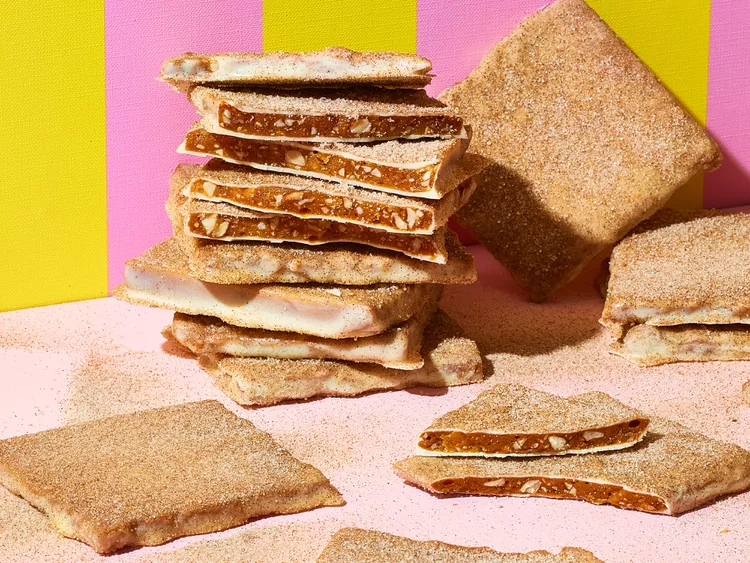

Churro Toffee

How to Make Churro Toffee
You don't have to plan a trip to Disney to have this classic treat.
Leave it to the genius of Disney to improve a dessert that is already perfect: English toffee. At Disney California
Adventure Park, guests flock to Trolley Treats for Churro Toffee, a huge shingle of crisp toffee dipped in white
chocolate and coated in cinnamon sugar. The hefty piece of toffee is big enough to share, but that doesn't mean
you'll want to.
Churro Toffee Ingredients
- Toffee
- White Chocolate Coating
- Cinnamon Sugar
How to Make Churro Toffee Step-By-Step
- Line a 9 by 13-inch baking pan with parchment paper, leaving overhang on all four sides.
- In a medium, heavy-bottomed Dutch oven or saucepan, combine butter, brown sugar ,and ¼ cup cold water. Bring to
a boil over medium heat, stirring occasionally with a heatproof spatula.
- Once sugar mixture comes to a boil, carefully secure a candy thermometer to the side of your pot and heat the
sugar mixture to 300 degrees F (148 degrees C), or the hard crack stage. The amount of time this takes will
vary, but it usually takes 10 to 12 minutes. Keep a very close eye on the sugar mixture as it cooks.
- Meanwhile, combine almonds and baking soda in a small bowl, stirring well so baking soda is evenly distributed.
Set close to where your sugar is cooking, along with the vanilla and salt so you can work quickly but carefully.
- Once the sugar reaches 300 degrees F (148 degrees C), remove from heat immediately. Carefully pour in almond
mixture, vanilla, and salt. (This will bubble and spurt so be careful!). Stir vigorously with a heatproof
spatula until everything is incorporated and the toffee is shiny and even in color. Transfer toffee to the
prepared baking pan. Shake the pan to smooth the toffee into an even layer, then gently tap it on the counter a
few times to pop any trapped air bubbles. Let sit for about 5 minutes, then use a sharp knife to score the
toffee into 12-equal portions. Place toffee in the fridge to cool for about 20 minutes.